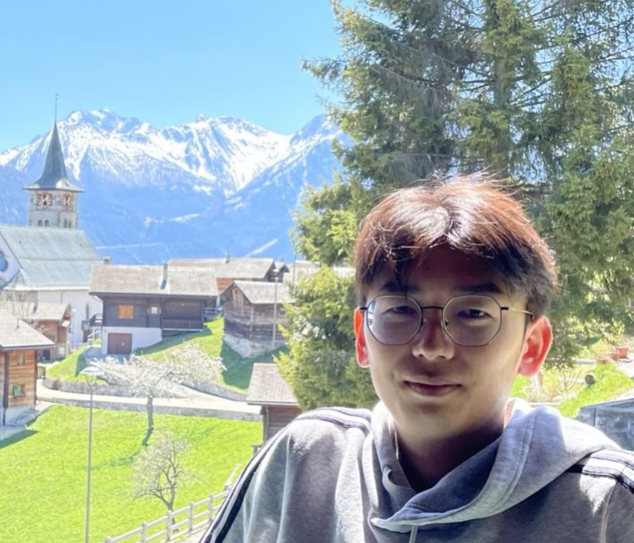

|
Xi Liu
Welcome to my homepage! I am a third-year Computer Science PhD student at Clemson University, advised by Prof. Siyu Huang. I earned my M.Sc. in Computer Science from DIKU, University of Copenhagen—where I was advised by Prof. Serge Belongie—and was an affiliated researcher at the Pioneer Center for AI from 2022 to 2023. Prior to DIKU, I completed my B.S. in Computer Science and Technology at Jilin University.
My research focuses on 3D vision, generative models, vision-language models, and neural rendering. I use generative priors to improve 3D reconstruction and scene understanding, and study how to parse images into structured representations such as SVGs.
I was an Applied Scientist Intern at Amazon, working on 3D virtual store reconstruction with Just Walk Out (2025) and on 3D-consistent video generation with Central Machine Learning (2026). Previously, I worked as a Research Assistant at CPII, CUHK, and as a LiDAR Perception R&D Engineer at Momenta.
I am actively seeking internship opportunities in generative AI, vision-language models, and 3D vision. Feel free to contact me about opportunities or collaborations!
Email /
CV /
Scholar /
Github
|

|
Publications
* Equal contribution.
|
Lang-SVG: Hierarchical Image Vectorization with Language Priors
Xi Liu, Chaoyi Zhou, Run Wang, Jiaang Li, Feng Luo, Junxiang Huang, Siyu Huang
NeurIPS, 2026
Hierarchical image vectorization with language priors.
|
|
Seeing or Knowing? Visual Context Sensitivity in Multimodal Large Language Models
Jiaang Li, Chengzu Li, Zhaochong An, Yifei Yuan, Xi Liu, Serge Belongie, Vésteinn Snæbjarnarson
ECCV, UniWorld Workshop, 2026
arXiv
We investigate how multimodal language models balance visual evidence against language priors, and how to control their reliance on visual context.
|
|
HAD: Hallucination-Aware Diffusion Priors for 3D Reconstruction
Xi Liu, Weiwei Sun, Zhou Ren, Chris Broaddus, Siyu Huang, Laurent Guigues
CVPR, 2026
project page / arXiv / code
We detect and mask hallucinated content in diffusion-generated views to improve sparse-view 3D reconstruction.
|
|
Bézier Splatting for Fast and Differentiable Vector Graphics
Xi Liu*, Chaoyi Zhou*, Nanxuan Zhao, Siyu Huang
NeurIPS, 2025
project page / arXiv / code
Bézier splatting enables fast, differentiable, high-fidelity vector graphics rasterization using 2D Gaussians sampled along curves.
|
|
Latent Radiance Fields with 3D-aware 2D Representations
Chaoyi Zhou*, Xi Liu*, Feng Luo, Siyu Huang
ICLR, 2025
project page / arXiv / code
We learn 3D-aware 2D representations that enable 3D reconstruction directly in latent space.
|
|
3DGS-Enhancer: Enhancing Unbounded 3D Gaussian Splatting with View-consistent 2D Diffusion Priors
Xi Liu*, Chaoyi Zhou*, Siyu Huang
NeurIPS, 2024 Spotlight
project page / arXiv / code
We use video diffusion priors to enhance 3D Gaussian Splatting, treating consistency across views as temporal consistency in video generation.
|
Academic Service
Conference Reviewer: NeurIPS (2024, 2025), ICLR (2025, 2026), ICML (2025, 2026), CVPR (2026).
Additional Reviewing: TVCG (2025), SIGGRAPH (2026).
|